01 — EVENT MAPイベントを、
イベントを、
地図でつかむ。
開催施設をクリスタルで可視化。施設の分布やイベントの状況を、いつもの地図の上で確認できます。
施設クリスタル / MAP表示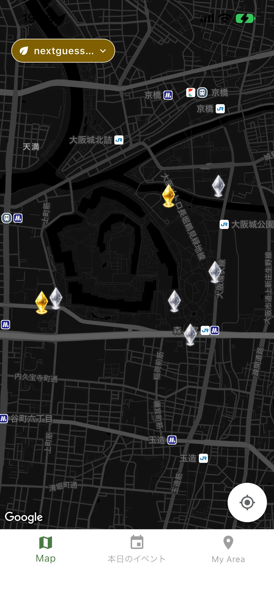
LOCATION × INFORMATION × DECISION
見えていなかった選択肢を、地図の上に。
イベント情報も、自分の予定も、過去の乗車実績も。
NextGuessは、現場で考えるための情報を届けます。
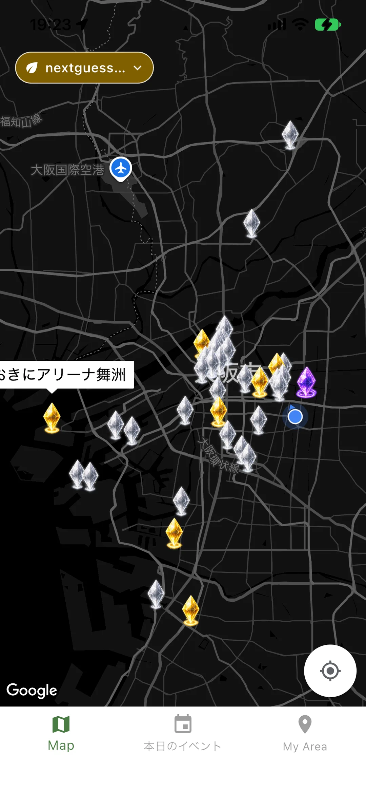
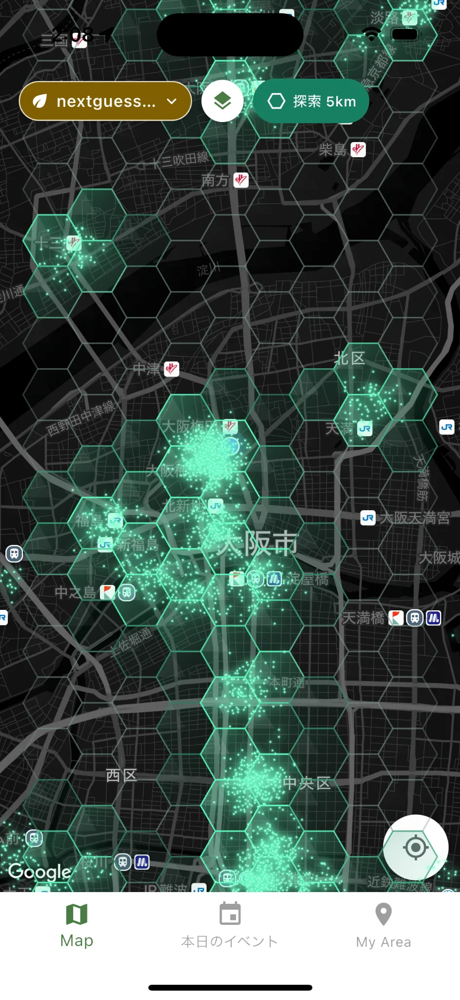
どこへ向かうか。いつ動くか。何を優先するか。
NextGuessが目指すのは、行動を決めるアプリではありません。必要な情報を見やすく整理し、一人ひとりが自分で判断できる環境です。
普段使う地図に、今日のイベント、個人の予定、業務に役立つデータを重ねていきます。
機能を見る ↗NEXTGUESS APP
イベントの把握から個人の予定管理まで。
使う人が選び、使う人が判断するための機能。
開催施設をクリスタルで可視化。施設の分布やイベントの状況を、いつもの地図の上で確認できます。
施設クリスタル / MAP表示
当日のイベント情報を施設単位で一覧表示。開始時刻、終了時刻の取得状況、通知設定などを確認できます。
本日のイベント / 施設別通知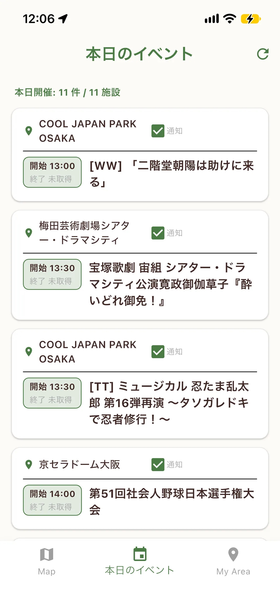
日時・場所・メモを登録し、独自のエリア一覧にまとめられます。訪問先や予定を地図と結びつけて管理します。
地点登録 / 予定一覧 / メモ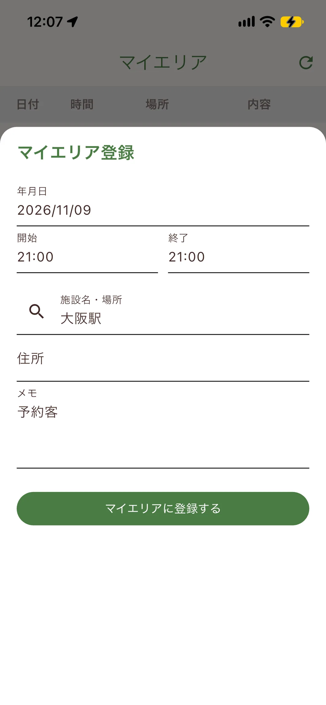
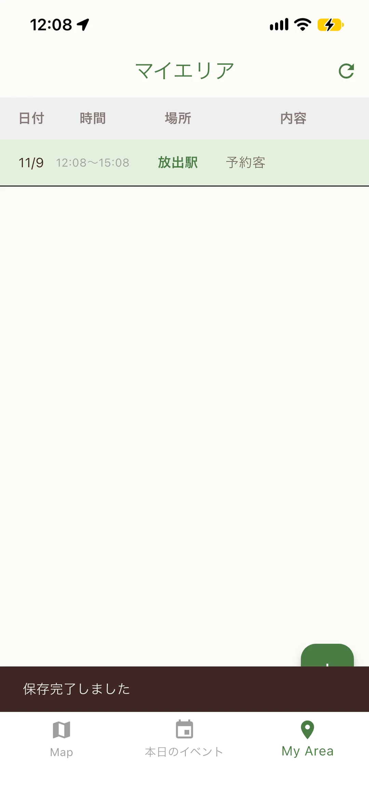
勤務形態と時間を設定し、勤務カレンダーや日別の営業実績を管理。日々の業務を整理するための機能です。
勤務設定 / 勤務カレンダー / 実績入力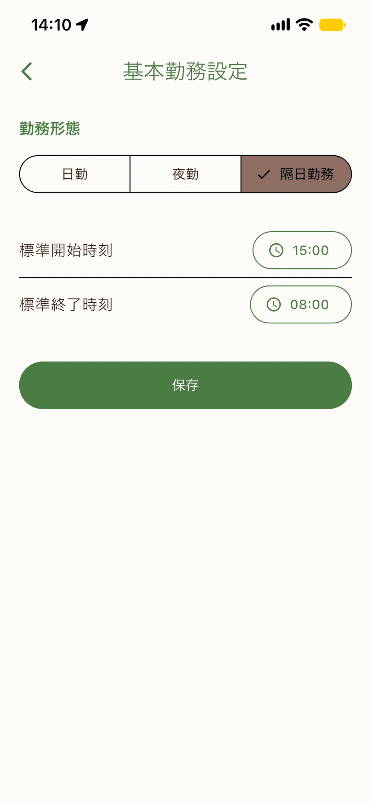
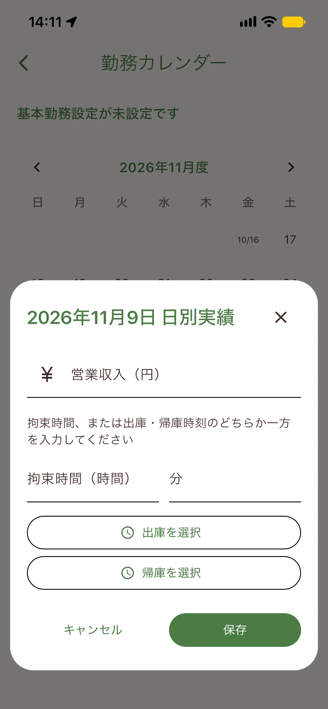
NEXTGUESS BUSINESS
会社が保有する乗車データを管理・配信し、ドライバーがMAPとHEXで確認できる仕組み。分析を、現場の判断材料に変えます。
会社用Webで実績データを管理
対象ドライバーと条件を選択
位置の分布と密度を視覚化
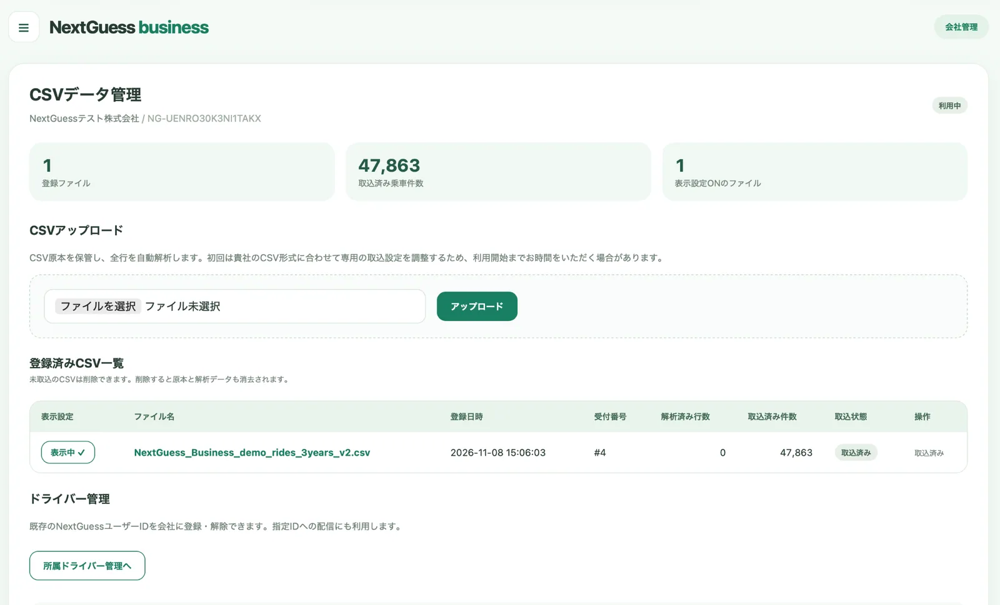
大阪A区域・3年分のデモデータで動作確認。管理Webとアプリの探索画面が同じ乗車実績を参照します。
※ 掲載画像は開発用デモ環境の画面です。乗車位置の点描で分布を確認し、HEX探索でエリアごとの実績密度を表示。探索範囲は1km・2.5km・5kmから選べます。
距離を選ぶと実際のデモ画面が切り替わります。
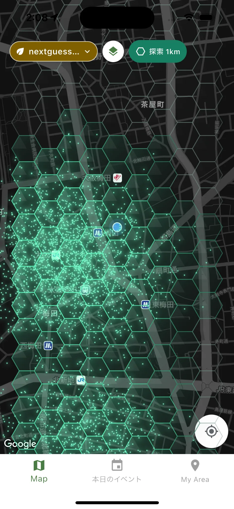
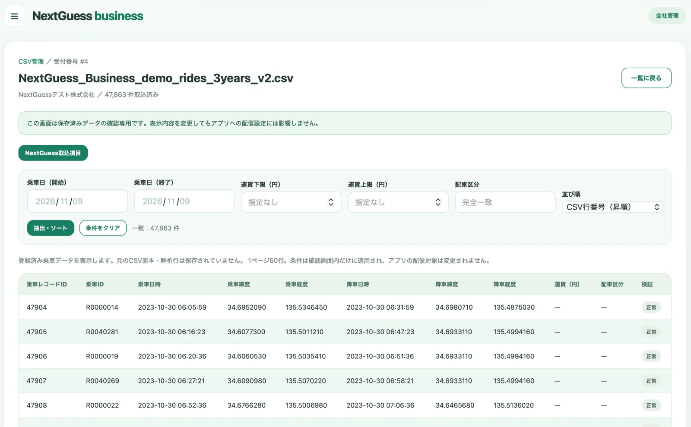
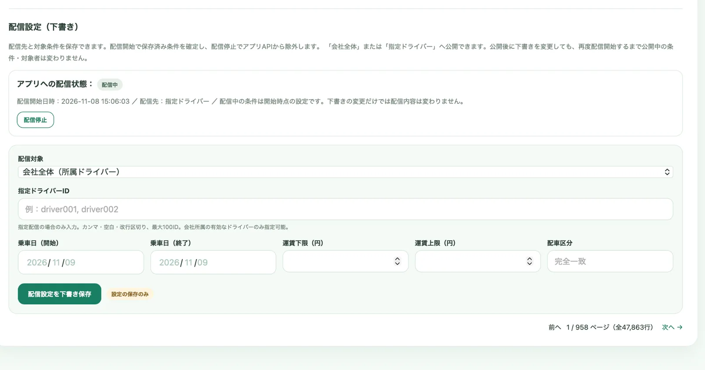
データの登録から配信、アプリでの確認まで。
管理側と利用側をつなぐ、一連のワークフロー。
SCREEN GALLERY
すべて実際に撮影したアプリ・管理Webの画面です。
架空のUIや合成モックは使用していません。
GET STARTED
NextGuessは現在、アプリのテストと機能改善を進めています。
Businessの導入・利用についてはお問い合わせください。